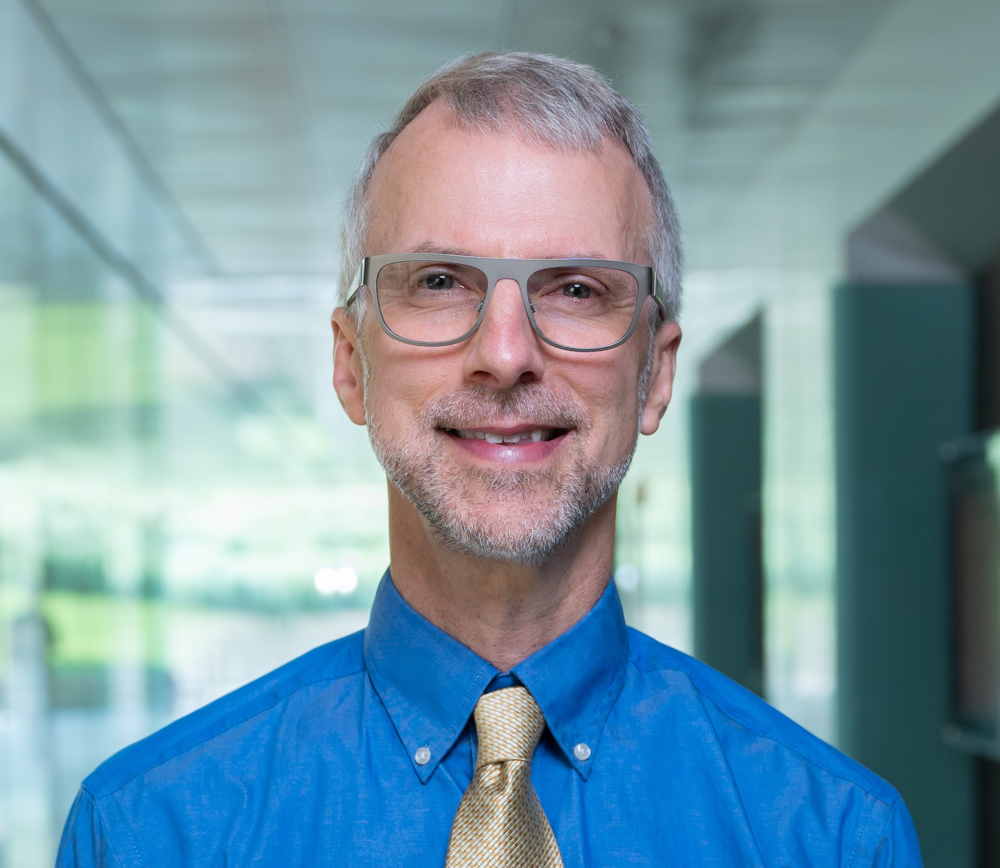
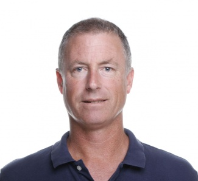
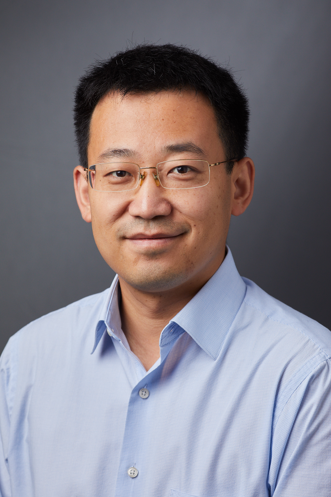
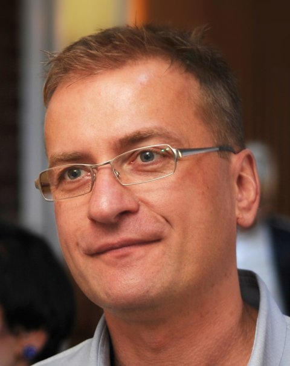
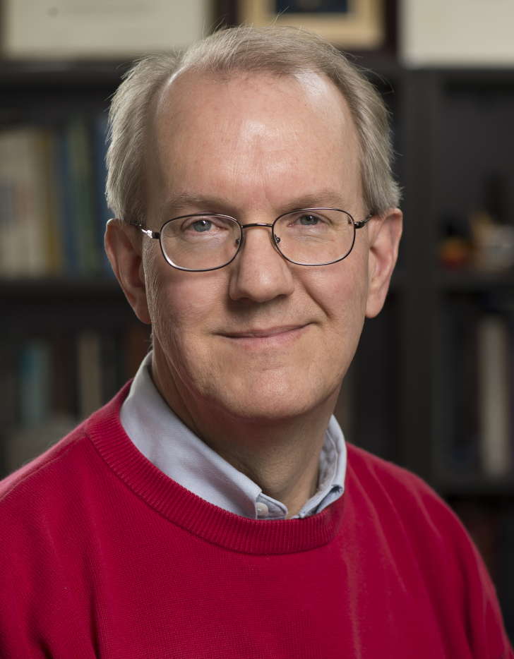
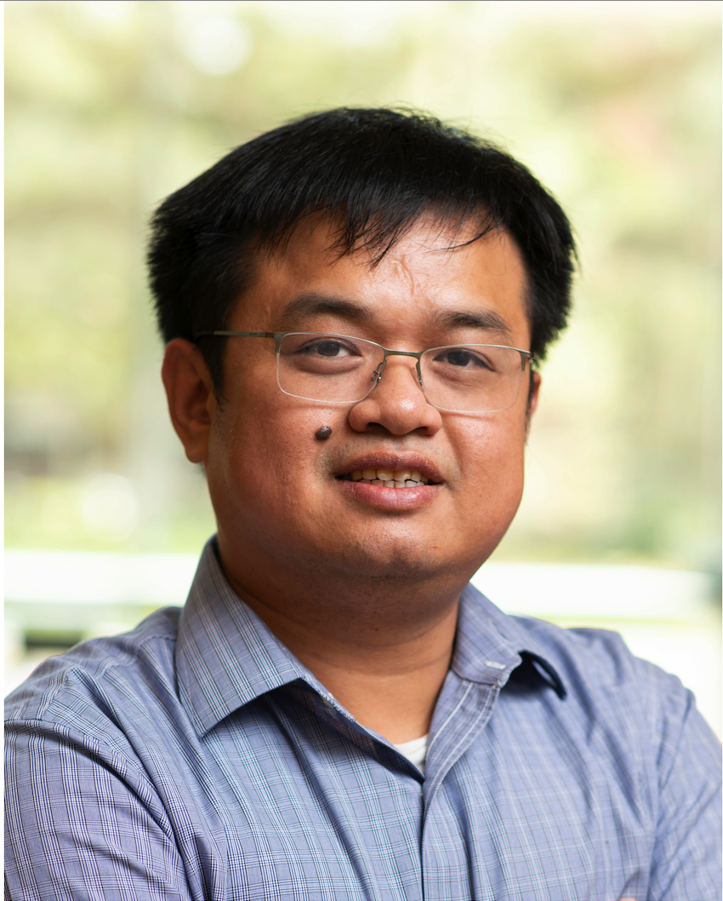
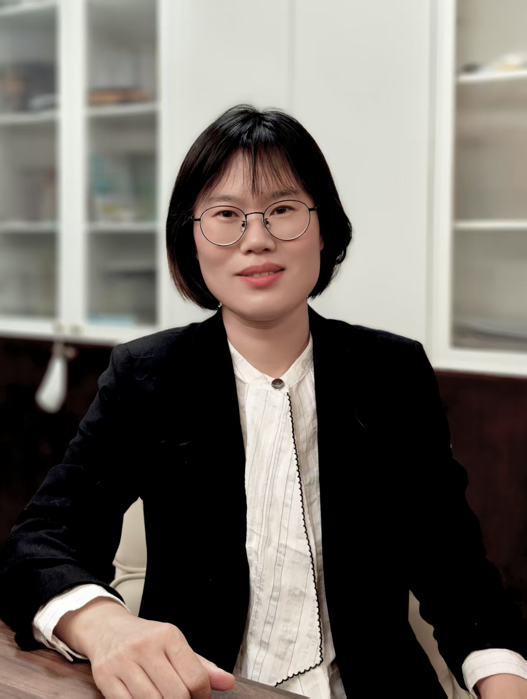
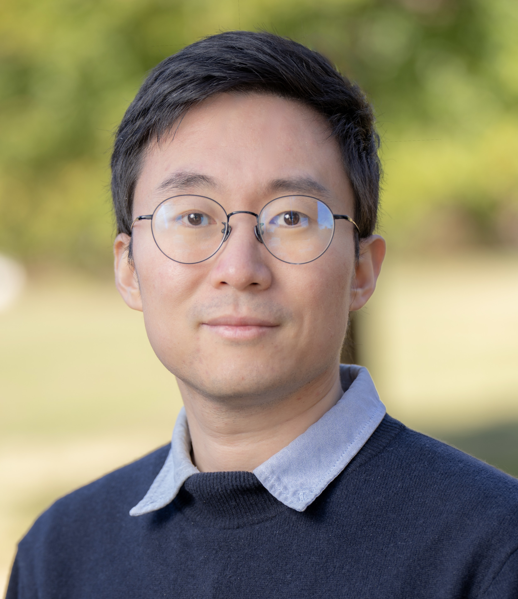

Agenda
Saturday, July 18
Continental breakfast

Local Patches Meet Global Context: Scalable 3D Diffusion Priors for Image Reconstruction
Jeff Fessler, PhD · University of Michigan
YouTube recording
Locally Linear Regions of a Network CT Denoiser
Craig Abbey, PhD · University of California, Santa Barbara
YouTube recording
Generative AI and Foundation Models for PET and SPECT
Chi Liu, PhD · Yale University
YouTube recording
Deep Artifact Reduction
Marc Kachelriess, PhD · German Cancer Research Center (DKFZ)
YouTube recordingBreak and Meet the TMI Editor-in-Chief
Ge Wang, PhD · Rensselaer Polytechnic Institute
Recording not planned for publication
New Methods for Super-Resolution and Harmonization in MR Neuroimaging
Jerry Prince, PhD · Johns Hopkins University
YouTube recording
Diffusion Models-Based PET Image Reconstruction
Kuang Gong, PhD · University of Florida
YouTube recording
Deep Learning & Statistical CT Reconstruction: From Model to Clinical Applications
Wenjing Cao, PhD · United Imaging Healthcare
YouTube recording
Deep Learning for 3D Reconstructions from Cryo-Electron Microscopy Data
Kanupriya Pande, PhD · Lawrence Berkeley National Laboratory
YouTube recording
Generative Translation Priors: Bayesian Imaging with Cross-Modality Image Translation
Yu Sun, PhD · Johns Hopkins University
YouTube recording